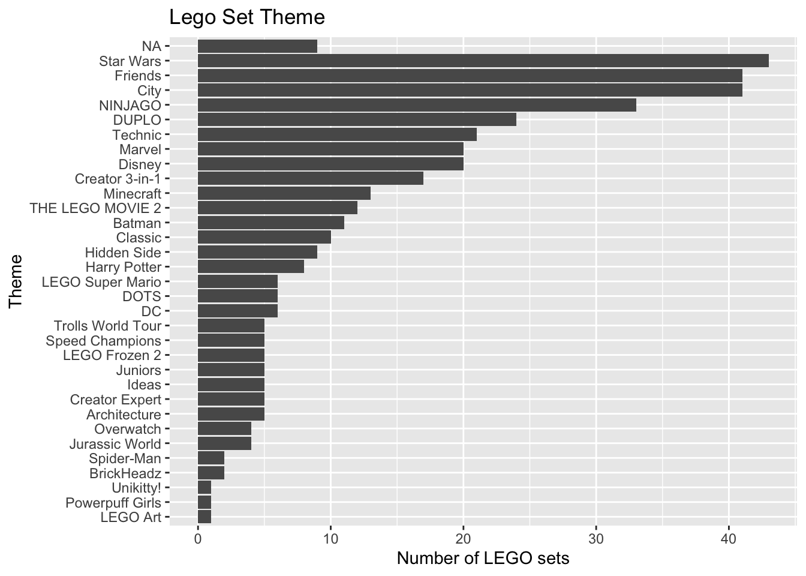

library(tidyverse)
library(tidymodels)
library(knitr)
# load other packages as needed HW 02: Multiple linear regression
Important
This assignment is due on Tuesday, February 10 at 11:59pm. To be considered on time, the following must be done by the due date:
Final
.qmdand.pdffiles pushed to your GitHub repoFinal
.pdffile submitted on Gradescope
Introduction
In this analysis you will use multiple linear regression to describe the relationship between the price and various features of LEGO sets based on data from brickset.com.
Learning goals
In this assignment, you will…
- conduct exploratory data analysis.
- create new variables.
- interpret coefficients in multiple linear regression models.
- continue developing a reproducible analysis workflow.
Getting started
Go to the sta210-sp26 organization on GitHub. Click on the repo with the prefix hw-02. It contains the starter documents you need to complete the assignment.
Clone the repo and start a new project in RStudio. See the Lab 00 for details on cloning a repo and starting a new project in R.
The following packages will be used in this assignment:
Data: LEGO sets
The data for this analysis includes information about LEGO sets from themes produced January 1, 2018 and September 11, 2020. The data were originally scraped from Brickset.com, an online LEGO set guide and were obtained for this assignment from Peterson and Ziegler (2021).
You will work with data on about 396 randomly selected LEGO sets produced during this time period. Below are the primary variables used in this analysis:
Price: Recommended price of the set from brickset.com (in US dollars)Theme: Theme of the set (e.g., City, Duplo, Friends) scraped from brickset.comPieces: Number of the pieces in the set from brickset.comMinifigures: Number of minifigures (LEGO people) in the set scraped from brickset.com
legos <- read_csv("data/lego-sample.csv")Exercises
The goal of this analysis is to use features of LEGO sets to understand variability in the price.
Important
Instructions
Type your responses to each question in your Quarto document. Write all narrative responses using complete sentences and include informative axis labels and titles on visualizations. Use a reproducible workflow by periodically rendering the Quarto document, writing an informative commit message, and pushing the updated .qmd and .pdf files to GitHub.
Exercise 1
Visualize the distribution of the response variable Price and compute summary statistics. Use the visualization and summary statistics to describe the distribution of the variable.
Exercise 2
Create a new categorical variable called
minifigures_fctthat is a factor taking the following levels:0: If there are no LEGO people in the set1-2: If there are 1 or 2 LEGO people in the set3+: If there are 3 or more LEGO people in the set
Show the number of observations at each level of
minifigures_fct.Visualize the relationship between
Priceandminifigures_fct. Write two observations based on the plot.
Important
You will use minifigures_fct (instead of Minifigures) in the remainder of the assignment.
Exercise 3
The distribution of Theme is shown below. The bars are ordered by how frequently they occur in the data set.
Code
legos |>
count(Theme) |>
ggplot(aes(x = fct_reorder(Theme, n), y = n)) +
geom_col() +
labs(title = "Lego Set Theme",
x = "Theme",
y = "Number of LEGO sets") +
coord_flip()
- What is one reason we may want to avoid putting the variable
Themein a model as is? - We will create a new variable that collapses some of the levels of
Theme. Make a new variable calledtheme_colthat has levels for the top four most frequent themes, then the categoryOtherfor all other themes. - How many observations are in each level for the new variable created in part (b)?
Note
Use theme_col (instead of Theme) for the remainder of the assignment.
Exercise 4
- Fit a model using
Pieces,minifigures_fct, andtheme_colto predictPrice. Neatly display the model using three decimal places. - Use the model to describe the expected change in price for each additional 20 pieces in a LEGO set.
Exercise 5
Now let’s consider a model that includes an interaction such that the effect of pieces can change based on the theme.
- Make a plot to visualize the potential interaction effect.
- Based on the plot created in part (a), does the relationship between the price and number of pieces appear to differ based on theme? Briefly explain why or why not.
- Modify the model from Exercise 4 such that the effect of pieces can differ based on theme. Neatly display the model using three decimal places.
Exercise 6
Describe the relationship between the number of minifigures in a LEGO set and the price based on the model in Exercise 5.
Exercise 7
- Interpret the coefficient for the main effect of
Piecesin the context of the data. - Interpret the coefficient of
Pieces:theme_colFriendsin the context of the data. - Describe the effect of
Piecesfor LEGO sets in the Friends theme in the context of the data.
Exercise 8
- Briefly explain why the intercept for the model in Exercise 5 does not have a meaningful interpretation.
- Refit the model from Exercise 5 so that the intercept has a meaningful interpretation. Display the model using three decimal places.
- Interpret the intercept in the context of the data. Use specific values in the interpretation.
Exercise 9
The following is a general question about linear regression. It is not specific to the LEGO analysis.
In lecture we discussed how the distribution of the error terms (and thus the distribution of the response variable \(Y\)) for a given value of the predictor \(X\) has a variance of \(\sigma^2_{\epsilon}\). Therefore, we are assuming this variance is the same for all values of the predictor when we conduct inference.
Briefly explain why this assumption is important when we conduct inference based on mathematical models but is not necessary for conducting simulation-based inference.
AI Disclosure
Did you use an LLM / Generative AI tool to complete this assignment? If not, copy and paste the first option in your Quarto document. Otherwise, copy and paste all statements that describe how you used it. The purpose of the disclosure is for you to reflect on how you’re using AI in this course. It also helps learn how students are most effectively using AI.
- I didn’t use an LLM / Generative AI tool.
- I asked it to clarify one or more exercises.
- I asked it clarifying questions to better understand a concept.
- I asked it to help write code to complete an exercise.
- I gave it my code and asked it to help me fix it.
- I asked it about an error or why code would do something I didn’t want.
- I pasted the exercise prompt in AI and asked for help, but I wrote my answer myself.
- I pasted the exercise prompt in AI and copied and pasted at least some of the answer into my Quarto document.
- Other:______
Submission
Warning
Before you wrap up the assignment, make sure all documents are updated on your GitHub repo. We will be checking these to make sure you have been practicing how to commit and push changes.
Remember – you must turn in a PDF file to the Gradescope page before the submission deadline for full credit.
To submit your assignment:
Access Gradescope through the STA 210 Canvas site.
Click on the assignment, and you’ll be prompted to submit it.
Mark the pages associated with each exercise. All of the pages of your assignment should be associated with at least one question (i.e., should be “checked”).
Select the first page of your .pdf submission to be associated with the “Workflow & formatting” section.
Grading (50 points)
| Component | Points |
|---|---|
| Ex 1 | 4 |
| Ex 2 | 5 |
| Ex 3 | 5 |
| Ex 4 | 5 |
| Ex 5 | 7 |
| Ex 6 | 4 |
| Ex 7 | 6 |
| Ex 8 | 7 |
| Ex 9 | 3 |
| Completing AI Disclosure | 1 |
| Workflow & formatting | 3 |
The “Workflow & formatting” grade is to assess the reproducible workflow and document format for the applied exercises. This includes having at least 3 informative commit messages, a neatly organized document with readable code and your name and the date updated in the YAML.
References
Peterson, Anna D., and Laura Ziegler. 2021. “Building a Multiple Linear Regression Model With LEGO Brick Data.” Journal of Statistics and Data Science Education 29 (3): 297–303. https://doi.org/10.1080/26939169.2021.1946450.